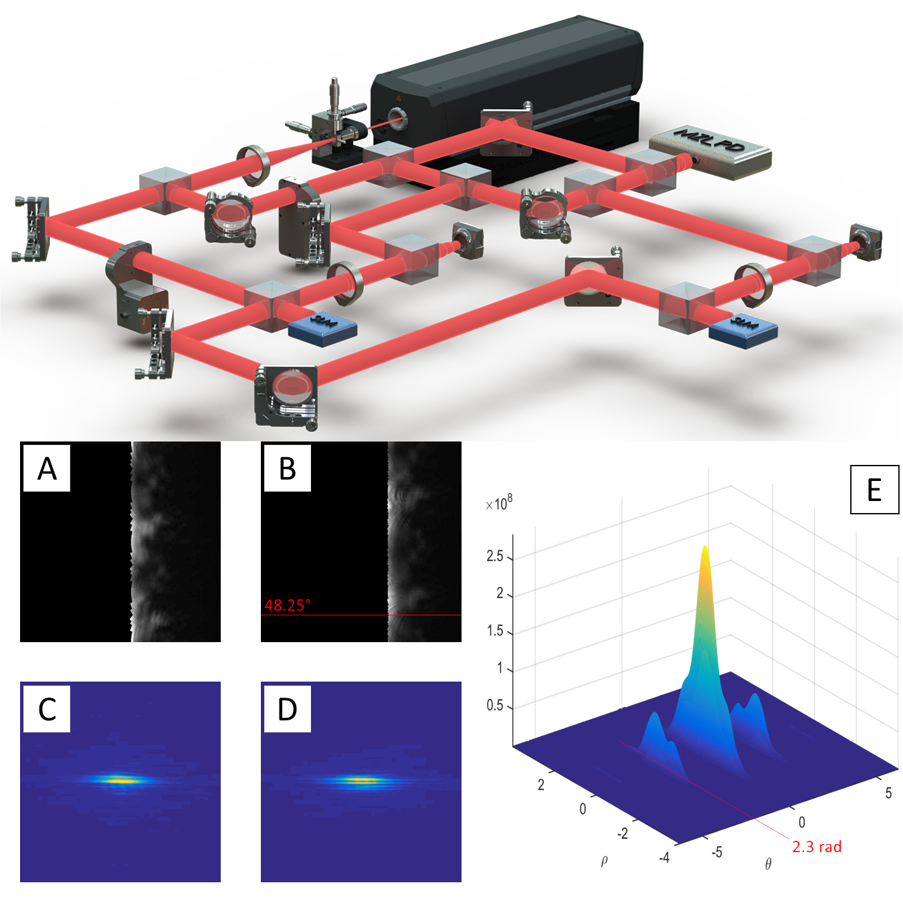
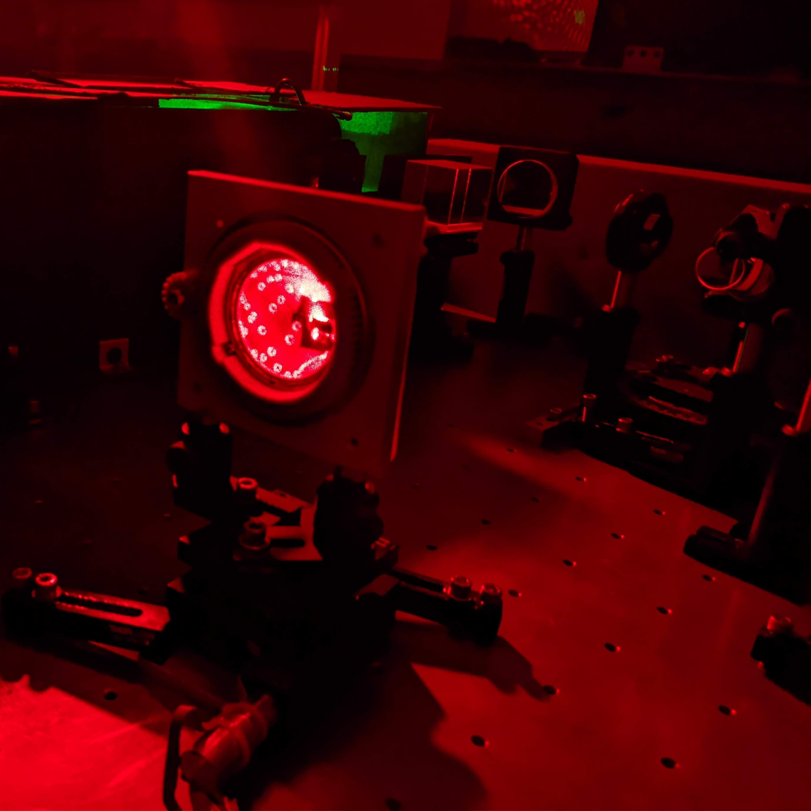
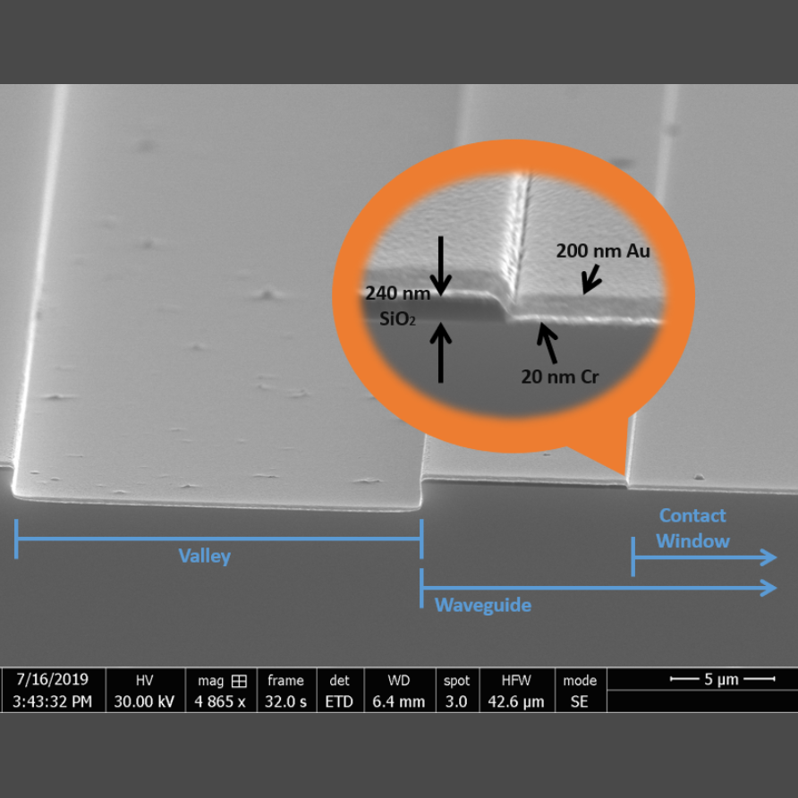

Hello, and welcome to my website! This landing page serves as an interactive resumé- feel free to click around to get a better idea of who I am and what I do.
About Me
I am currently a research assistant at the Lab for Atomic and Photonic Technologies at Northwestern University, where my primary research is into applications of analog and digital holography, with a particular focus on optical signal processing and data acquisition. I also research the development of photonic integrated circuits in AlGaAs/GaAs and LiNbO3 for use in fast and slow light gyroscopes using Rb atoms.
I'm passionate about developing new and interesting ways to use the complex nature of light in everything from fundamental science to entertainment. Light is an incredible tool that we are only just beginning to fully dominate; it allows us to observe from the very structure of the universe to its most minute particles, while simultaneously connecting us to virtual worlds limited only by our imagination. I strive to design technologies that truly take advantage of this fundamental force in order to improve the human experience.
Education
Ph.D. in Electrical Engineering- Photonics and Solid State Northwestern University
For outreach and potential future contributions to the field of optics.
2017
Graduation Honors- ITESM
For graduating at the top of the class within the major.
Work Experience
2018 - Present Research Assistant, Lab. for Atomic & Photonic Technologies, Northwestern University
Led research into opto-electronic correlators
Led research into nanofabrication for AlGaAs photonic integrated circuits
Led research into volume holograms in PQ:PMMA substrates
Built fully automated setups for performing and evaluating optical, opto-electronic, and photonic experiments
Developed SOPs for fabricating and evaluating PQ:PMMA volume holograms
Managed a team of four graduate researchers (three PhD students & one postdoc)
Mentored Two graduate, two undergraduate, and two highscool students
Published five peer-reviewed journal papers, and presented at various refereed conferences (CLEO, FiO, SPIE PW, and AMOS)
Prepared three accepted facilities proposals for Argonne National Laboratory
Assisted in preparing three grant proposals that were successfully funded
Gave seminars on holography, PID control systems, and coupled wave analysis
2016 - 2017 Research Assistant, Optical Telecom. Lab., IINGEN, UNAM
Assisted in research into fiber-optic orthogonal frequency division multiplexing
Achieved a 400 Gbps link
Built characterization setups for various fiber-optic components (primarily EOMs & MZIs)
Research
My Ph.D. research can be broadly categorized into three groups, each with their own challenges and skillsets. I have dedicated roughly equal amounts of time to all three, which share the general topics of interferometry and coupled optical waves. Click on each topic to read more.

Optical Correlators

PQ:PMMA Volume Holograms

Photonic Integrated Circuits
Skills
Note: text in bold denotes skills that I am especially proud of.
Proficient in MatLab and C++. Experienced with VHDL, Julia, Python, and HTML.
VHDL programming for real-time signal processing on Xilinx Ultrascale+ FPGAs.
Proficient in experiment design and automation with experience in robotics, image processing, low-level protocols, and measurement interfaces.
Experience with FDTD, wave-optic, raytracing, and mode solving simulations using MatLab, Comsol, and Zemax.